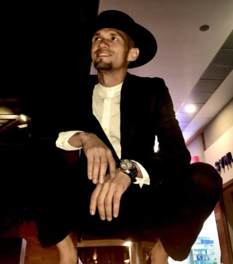
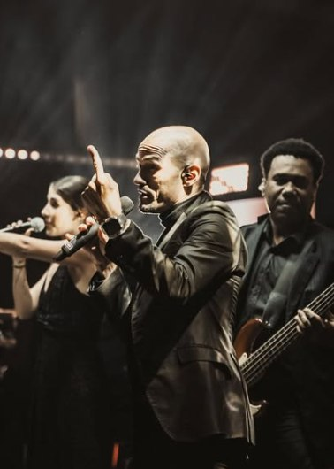
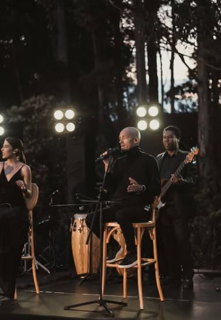
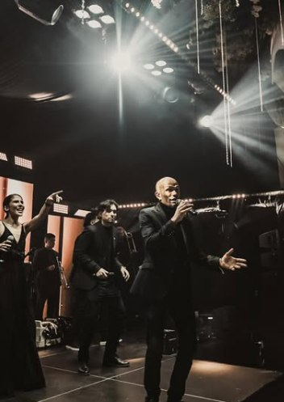

Cantante — Riohacha
Maco
Jonathan McCormick
Canta. Enseña.
Construye comunidad.
- Cantante en We Are Fest
- El Profe — clases de canto en Fácil Cantar
- Fundador de Cantan x el Mundo

Sobre Maco
No es solo un cantante.
Jonathan McCormick canta bajo el nombre de Maco. Fue parte de A Otro Nivel Colombia, hoy es una de las voces de We Are Fest, y también responde a otro nombre: El Profe — el fundador de Cantan x el Mundo y la voz detrás de las clases de Fácil Cantar.
Escenario y salón de clase son la misma pasión, contada de dos formas distintas.
Trayectoria
Distintas etapas, una misma voz.
Televisión
A Otro Nivel Colombia
Su paso por el programa lo puso frente a un público exigente, en la televisión nacional colombiana.
En escena
We Are Fest
Hoy Maco es una de las voces de @wearefest_, llevando su interpretación a tarimas y a nuevos públicos.

Fuera del escenario
El Profe
Con la misma pasión con la que interpreta, Maco enseña. Es el rostro de Fácil Cantar y el fundador de Cantan x el Mundo.


We Are Fest
Una de las voces del festival.
@wearefest_
Proyectos
Lo que construye fuera de la tarima.
La faceta educativa de Maco. Antes de ser El Profe en redes, es el profesor que enseña a cantar con la misma exigencia y cercanía que muestra sobre un escenario.
Metodología y modalidades de clase: próximamente en este espacio.
El espacio donde Maco enseña técnica vocal. Una extensión directa de su faceta como El Profe, pensada para quienes quieren aprender a cantar.
Ver Fácil Cantar en InstagramEl proyecto fundado por Maco que conecta el canto con distintos públicos y lugares.
Ver Cantan x el Mundo en InstagramGalería